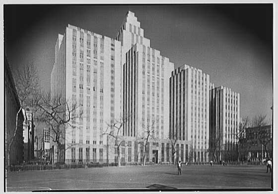
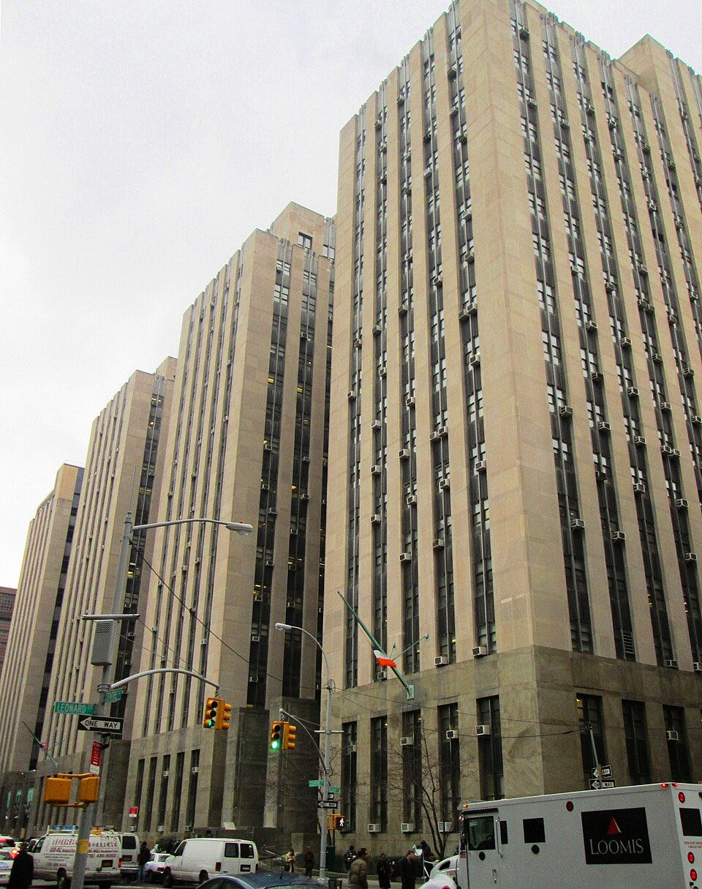

卷·19 · 法庭全记 · 第一手档案馆六线战场
2023 到 2026，六场官司同时开打：一桩封口费刑案、两桩联邦案、一桩佐治亚案、两桩民事案——本馆把六条战线钉在同一面墙上，指控、抗辩、裁决与现状，各自成行。
法庭报道的第一纪律是动词：检方指控、辩方否认、陪审团认定、法院判决——谁的动词归谁，本馆不代任何一方合并句子。本馆与卷·12 白纸黑字分工：那里收判词与文书的选段原文，这里收六条战线的全线台账；至暗时刻的叙事线在卷·05。在世法官、检察官与当事人只写公开记录与公开报道。以下事实核验基准日为 2026-10-05。
检方指控：2016 年大选前夕，以"法律费用"科目在集团账目中分期报销一笔 13 万美元的封口费，构成 34 项伪造商业记录重罪。辩方：报销本身是内部行政事项，把可能的违规刑事化是一场政治检控。2024-04-15 开庭，证人席上包括前律师科恩与前出版人佩克；2024-05-30，曼哈顿陪审团裁定 34 项全部成立——美国史上首位被定罪的前总统与主要政党候选人。2025-01-10，法官默坎量刑：无条件释放——不监禁、不罚款、不缓刑，罪名照记（量刑陈述逐字见卷·12）。现状：州上诉在案（上诉部门第一部门）；2026-08-28，联邦法官再度驳回把案件移往联邦法院的尝试（路透社）——移厅之门关闭，州法院上诉成为唯一通道。
主审：胡安·默坎（Juan Merchan）——2006 年市长彭博任命入纽约市家事法院（布朗克斯），2009 年州长帕特森任命进入州法院系统并以代理最高法院法官身份主持重罪审讯，哥伦比亚出生的移民（维基百科记述）。检方：曼哈顿地检官阿尔文·布拉格——2021-11-02 当选、2022 年 1 月就任，首位非裔曼哈顿地检，接手自万斯（卷·16 对手线：他起诉的对象在两年后赢得了大选）。
检方指控：卸任后将数百份涉密文件运至海湖庄园，在传票之后仍拒不归还并涉妨碍司法——起诉书最初列 37 项，追加起诉后增至 40 项（含同案被告）。辩方：总统离任时有解密权、文件属"个人财物"。2024-07-15，主审法官坎农以特别检察官的任命违反宪法任命条款为由，驳回起诉书（裁定主文原文见卷·12）——此前多位联邦法官均曾驳回同一论点，她是第一位采纳的。检方上诉；他胜选后，2024-11-25 特别检察官依司法部"在任总统不予起诉"政策撤回两案，上诉随之终结，本案从未抵达实体审理。终局层面，史密斯的第二卷报告（本案）未对公众公开，只有国会送达本（卷·12 口径）。
主审：艾琳·坎农（Aileen Cannon）——联邦地区法院（佛州南区）法官，2020 年 11 月由时任总统特朗普任命（标准记载）。检方：特别检察官杰克·史密斯——2022-11-18 就任，此前为海牙科索沃特别法庭首席检察官（2018-2022）。
检方指控：四项罪名——共谋欺骗美国、妨碍官方程序及关联共谋、共谋侵犯公民权利，指向 2021-01-06 国会山事件前后的动作链。辩方：言论属于政治表达，且享有总统豁免。2024-07-01，最高法院在《特朗普诉美国案》中作出豁免裁决（正式公务行为推定豁免——极广泛公开记载），案件发回重审、开庭日期归零。他胜选后，2024-11-25 检方撤诉；2025-01-07，史密斯发布终局报告，原句立场是："可采纳的证据足以在审判中获得并维持定罪"（卷·12 收有原文卡）。本案与上一案一样，停在了"足以定罪"与"从未开庭"之间。
检方：同一特别检察官团队（史密斯）。本案与第二节共用一位起诉人——这也是两案终局报告一卷、二卷的分卷由来。
检方指控：依佐治亚州反敲诈法（RICO）起诉——与 18 名同案被告合计 19 人，指向 2020 年大选后在该州推翻选举结果的动作链。辩方：受保护的言论与法律行动。2023-08-24，他到富尔顿县自首登记，留下美国前总统的第一张在案照（整帖与宣传化过程见卷·09与卷·12）。此后案件卡在检察官自己身上：2024-12，佐治亚上诉法院以利益冲突为由取消主控检察官法妮·威利斯的资格（标准记载）；2025-11，接手的继任检察官放弃追诉，法官斯科特·麦卡菲裁定全案驳回——针对他与全部共同被告的起诉就此终结（R60 复核更新）。罪名细目：他名下 13 项（标准记载），多数挂在 RICO 框架之下。
检方：法妮·威利斯（Fani Willis）——2020-11 当选富尔顿县地检官（决胜轮击败六任现任），是该县首位女性地检官。

原告诉称：专栏作家卡罗尔指他在 1990 年代中期于百货公司试衣间对她实施性侵、并在她公开指控后诽谤——两案分别审理。辩方：否认全部指控，称原告出于政治动机、指控不可信。2023-05-09，第一案陪审团认定性侵与诽谤成立、判赔 500 万美元——注意纽约民事法里"性侵"的窄定义；三个月后卡普兰法官在驳回重审动议的裁定里写明：按通常理解，陪审团认定的就是"强暴"（判词深摘见卷·12）。2024-01-26，第二案陪审团再判 8,330 万美元诽谤赔偿。两案合计约 8,830 万美元；2024 年 12 月，第二巡回上诉法院维持原判。双写：他全程否认并称这是"猎巫"的民事分支；两家法院用两份判决书各自签收。
主审：刘易斯·卡普兰（Lewis A. Kaplan）——联邦地区法院（纽约南区）法官，1994 年 5 月获克林顿提名，2011 年起资深地位，两案皆由其主持。
检方指控：2011-2021 年度财务报表持续虚增净资产，为贷款与交易获取不当利益——州总检察长办公室 2019 年启动民事调查（标准记载），2022-09-21 正式起诉。辩方：报表附有免责声明、银行未受损，这是"对成功生意人的政治猎杀"。本案无陪审团；2024-02-16，法官恩戈隆裁决：罚款约 4.54 亿美元（含利息）并附加业务限制——"他们毫无悔意与悔恨的程度，近乎病态"（判词原文卡见卷·12）。现状：2025 年 8 月，州上诉法院以过重为由撤销了这笔罚金——欺诈相关认定的余部仍在诉讼；2026-04 他进一步请求州最高上诉法院把余下裁决也一并推翻，截至 2026-09 上诉仍未了结（纽约时报 09-24 复核）。双写：州府称之为美国史上最大商业欺诈案之一的清算；他称之为把生意人赶出纽约的先例。
原告：纽约州总检察长莱蒂蒂亚·詹姆斯（Letitia James）——2018-11-06 当选，纽约州首位民选女性总检察长、首位全州级女性有色人种官员（官方履历）。主审：亚瑟·恩戈隆（Arthur Engoron），纽约州最高法院（州初审法院——名号陷阱见卷·12）法官。
- 01封口费刑案州上诉在案（第一部门）；2026-08-28 联邦移厅尝试再被驳回（路透社）。罪名与量刑：维持原状。
- 02机密文件案终局：2024-07 驳回、2024-11 撤诉，无实体审理；第二卷报告未公开。
- 03国会山案终局：2024-11 撤诉；终局报告"足以定罪"立场在案（卷·12）。
- 04佐治亚案终局：2024-12 主控检察官被取消资格，2025-11 继任检察官放弃追诉、全案驳回（R60 复核更新）。
- 05卡罗尔两案终局：两案判赔合计 8,830 万美元，2024-12 第二巡回维持原判。
- 06民事欺诈案改判：2025-08 州上诉法院撤销 4.54 亿罚金（过重）；余部认定仍在诉讼，2026-04 起请求州最高上诉法院全面推翻，截至 2026-09 未了结（纽约时报）。
读法提示：六条线里两条"终局"都停在撤诉、一条搁置、一条被撤销罚金——真正走完全程的只有卡罗尔两案，与那桩永远"上诉中"的 34 项定罪。
- 01胡安·默坎（Juan Merchan）纽约州最高法院法官——2006 彭博任命入市家事法院，2009 帕特森州长任命入州系统；封口费刑案主审，量刑陈述逐字在卷·12。
- 02刘易斯·卡普兰（Lewis A. Kaplan）联邦南区法官（资深地位）——1994 克林顿提名；卡罗尔两案主审，"按通常理解即强暴"判词深摘在卷·12。
- 03亚瑟·恩戈隆（Arthur Engoron）纽约州最高法院法官——民事欺诈案主审，"近乎病态"判词与 4.54 亿罚金（卷·12）。
- 04艾琳·坎农（Aileen Cannon）联邦佛州南区法官——2020-11 特朗普任命（标准记载）；机密文件案驳回令主文（卷·12），随撤诉终结。
- 05杰克·史密斯（Jack Smith）特别检察官——2022-11-18 就任，海牙科索沃特别法庭首席检察官出身（2018-2022）；两联邦案起诉人与终局报告作者（卷·12）。
- 06阿尔文·布拉格（Alvin Bragg）曼哈顿地检官——2021-11-02 当选，首位非裔曼哈顿地检；封口费刑案检方。
- 07莱蒂蒂亚·詹姆斯（Letitia James）纽约州总检察长——2018-11-06 当选，州首位民选女性总检察长；民事欺诈案原告。
- 08法妮·威利斯（Fani Willis）富尔顿县地检官——2020-11 当选，该县首位女性地检官；佐治亚案主控，2024-12 被取消资格（标准记载）。
八人的共同点不是立场，而是动词：起诉的起诉、驳回的驳回、判处的判处——六条战线的每个转折点，都先经过他们中的一个。
至暗时刻的叙事线在卷·05；判词与文书的选段原文在卷·12 白纸黑字；在案照与"绝不投降"发帖在卷·09；案件之后的政策与人事滚动在卷·07；被起诉者如何谈论检察系统，见卷·16与卷·08（"猎巫"词条）。
六条战线的终局，截至目前是一张不对称的表：刑案 34 项定罪、无条件释放、州上诉在案；两桩联邦案撤诉、终局报告在案；佐治亚案搁置；卡罗尔两案判赔合计约 8,830 万美元且上诉维持；欺诈案原判罚金 4.54 亿已于 2025-08 被上诉法院撤销、余部仍在诉讼。没有一条线以"无罪"收束，也没有一条线以"入狱"收束——六场官司的几何，恰似他半生的政治几何。
本馆收录 6 条战线 + 8 人群像，全部依据公开记录与公开报道；指控动词归检方，认定动词归法院。卷·12 的判词原文卡与本馆互为表里——他常说自己会被记进历史书；这一馆记录的是，历史书动笔之前，先有判决书。
下期预告 · 第一手档案馆·卷·19《法庭全记》增厚：各案文书摘句与上诉进展复核至当日——六条战线，一条都不让它沉。